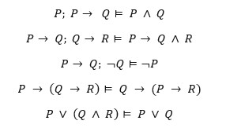
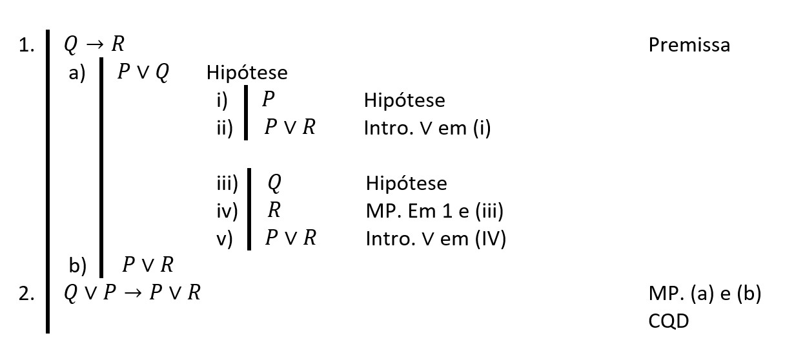

Frank Coelho de Alcantara -2020
O sistema de dedução natural foi desenvolvido por Gehard Gentzen, no final dos anos 1930, em busca de um sistema lógico matemático que fosse similar ao processo de dedução natural. O processo que seguimos quando queremos tomar uma decisão sobre qualquer coisa.
No mesmo trabalho Gentzen também apresentou ao mundo o Cálculo de Sequentes. No Sistema de Dedução Natural, existem regras de introdução e eliminação para cada operador e no cálculo de sequentes, regras de introdução..
O próprio Gentzen, parece ter acreditado que a diferença entre os dois é formal. Então, ao vemos o processo de dedução natural estamos vendo um superconjunto do cálculo de sequentes.
Alfabeto $\Sigma_L=\{\neg, \rightarrow, \{ P, Q, R, S,...\}, (,)\}$
Representação.
$$\frac{P_1, P_2, ...P_n}{Q}$$
Uma estrutura em forma de fração que não tem nenhuma relação com a divisão. Na parte de cima, equivalente ao numerador, estará um conjunto de premissas, e chamaremos esta parte de contexto $\Gamma$, ou teoria $\Gamma$ e na parte de baixo, equivalente ao denominador, está a conclusão lógica destas premissas
Representação.
$$\frac{P_1, P_2, ...P_n}{Q}$$
Não podemos esquecer que tanto premissas, quanto conclusão, são premissas. A diferença é que as premissas serão consideradas como verdadeiras, até prova em contrário.
Lê-mos: dado o contexto $\Gamma$ formado por $P_1, P_2, ...P_n$ podemos concluir $Q$, ou podemos inferir $Q$, ou ainda $Q$ pode ser inferido a partir do contexto $\Gamma$.
Introdução da Conjunção, ou simplesmente conjunção $(\text{Intro. } \wedge )$. Deduzimos $(P\wedge Q)$ já que $P$ e $Q$ já foram provadas como verdadeiras.
$$\frac{P; Q}{(P\wedge Q)}(\text{Intro. } \wedge)$$
Na dúvida, você pode verificar a tabela verdade e lembre-se que $P$ E $Q$ representam qualquer Fórmula Bem Formada. O ";" é dispensável.
Eliminação da Conjunção, simplificação $(\text{Elimin. }\wedge )$. Uma vez que $P$ e $Q$ já foram provadas como verdadeiras Deduzimos $(P\wedge Q)$.
$$\frac{(P\wedge Q)}{P}\ \ \ \ \ \frac{(P\wedge Q)}{Q} (\text{Elimin. } \wedge)$$
A regra tem duas formas e permite deduzir tanto $P$ quanto $Q$. Novamente, você pode usar a tabela verdade se preferir.
Considere o argumento: $(P\wedge Q); R \vDash (Q\wedge R)$ e prove sua veracidade.
Começamos listando as premissas da Teoria $\Gamma$: no caso $(P\wedge Q), R$.
Aplicamos a regra da simplificação $\frac{(P\wedge Q)}{Q}$ em 1.
$R \equiv \top$ devido a ser uma premissa e provamos $Q \equiv \top$ podemos provar $(Q\wedge R)$ usando a Introdução da Conjunção.
Considere o argumento: $(P \wedge Q) \wedge R, (S \wedge T) \vDash (Q \wedge S)$ e prove sua veracidade.
Lembre-se de começar sempre listando as premissas.
Eliminação da Negação Dupla ($\text{DNE}$): $$\frac{\neg \neg P}{P}$$
Introdução da Negação Dupla ($\text{DNI}$): $$\frac{P}{\neg \neg P}$$
Estas regras têm origem nas regras de equivalência.
Considere o argumento: $P;\neg \neg(Q\wedge R) \vDash (\neg \neg P\wedge \neg \neg R)$ e prove sua veracidade.
Começamos listando as premissas da Teoria $\Gamma$: no caso $P;\neg \neg(Q\wedge R)$.
Esta dedução cria um novo teorema, que pode ser útil, ou não. $$ \frac{$P;\neg \neg(Q\wedge R)}{(\neg \neg P\wedge \neg \neg R)}$$
Considere o argumento: $P,\neg \neg(P \wedge R) \vDash \neg \neg P \wedge R$ e prove sua veracidade.
A primeira eliminação da Implicação ($\text{MP}$) é conhecida como Modus Ponens: $$\frac{P; (P\rightarrow Q)}{Q}$$
A segunda eliminação da Implicação ($\text{MT}$) é conhecida como Modus Tollens: $$\frac{\neg Q; (P\rightarrow Q)}{\neg P}$$
Prove o seguinte argumento: $P, (P \rightarrow Q), P \rightarrow (Q\rightarrow R) \vDash R$
| 1. | $P$ | (Premissa)) |
| 2. | $(P \rightarrow Q)$ | (Premissa) |
| 3. | $P\rightarrow (Q\rightarrow R)$ | (Premissa) |
| 4. | $Q$ | ($\text{MP}$ em 1 e 2) |
| 5. | $(Q\rightarrow R))$ | ($\text{MP} \wedge$ em 1 e 3) |
| 6. | $R$ | ($\text{MP} \wedge$ em 4 e 5) |
Prove o seguinte argumento: $P \rightarrow (Q \rightarrow R),P, \neg R \vDash \neg Q$
| 1. | $P \rightarrow (Q \rightarrow R)$ | (Premissa)) |
| 2. | $P$ | (Premissa) |
| 3. | $\neg R$ | (Premissa) |
| 4. | $(Q\rightarrow R))$ | ($\text{MP}$ em 2 e 1) |
| 5. | $\neg Q$ | ($\text{MT} \wedge$ em 4,3) |
A inclusão da implicação é um processo de avaliação de hipóteses. Incluiremos um conjunto de hipóteses $P = \{P_1, P_2, P_3,...P_n\}$ de tal forma que se todas as hipóteses de $P$ forem verdadeiras. Podermos dizer que $P\rightarrow Q$.
Representaremos este processo na fórmula: $$\begin{smallmatrix} P_1 \\ : \\ \frac{P_n}{Q} \end{smallmatrix}$$
As hipóteses que criaremos para provar um $Q$ qualquer só podem ser usadas até que $Q$ seja provado e apenas para este fim.
Prove o argumento: $P \rightarrow Q \vDash \neg Q \rightarrow \neg P$
| 1. | $P \rightarrow Q$ | (Premissa) | ||||
| 2. |
|
(Hipótese) | ||||
| 3. | $\neg P \rightarrow \neg Q$ | ($\text{MP}$ em 2) |
A conclusão é escrita fora da ánálise de hipótese, por que a hipótese é verdadeira o que implica que $\neg Q$ é verdadeiro neste argumento.
Não podemos usar as inferências do conjunto de hipóteses fora da análise mas, podemos usar qualquer fórmula que esteja fora da análise para analisar a hipótese. Desde que esta fórmula não esteja em outra análise de hipótese.
Prove o argumento: $\neg B \rightarrow \neg A \vDash A \rightarrow \neg \neg B$
| 1. | $\neg B \rightarrow \neg A$ | (Premissa) | |||||||||
| 2. |
|
(Hipótese) | |||||||||
| 3. | $A \rightarrow \neg \neg B$ | ($\text{MP}$ em a e c) |
Introdução da Disjunção, ou simplesmente adição $(\text{Intro. } \vee )$. Deduzimos $P\vee Q$ já que na disjunção basta que $P$ ou $Q$ sejam provadas como verdadeiras.
$$\frac{P}{(P\vee Q)} \ \ \ \ \ \frac{Q}{(P\vee Q)} (\text{Intro. } \vee)$$
O nome adição é antigo e remonta a época em que a disjunção era chamada de adição lógica e, neste caso a regra de inferência indica que você pode somar logicamente qualquer proposição verdadeira a qualquer Fórmulas Bem Formadas sem alterar a verdade desta fórmula.
Para eliminar $P\vee Q$, temos um problema. Não há como definir qual premissa é verdadeira, então precisamos utilizar a técnica da análise de hipóteses. E teremos que analisar as hipóteses para os dois operandos da disjunção.
A Eliminação da Disjunção ($\text{Elimin. } \vee$) tem a forma:$$\frac{\begin{smallmatrix} & P_1 & Q_1 \\ & : & :\\ (P\vee Q) & R & R \end{smallmatrix}}{R}$$
Isto quer dizer que se encontramos uma $P\vee Q$ e conseguimos derivar $P$ em $R$ e $Q$ em $R$, então, podemos substituir $P\vee Q$ por $R$ na próxima linha.
Prove o argumento: $P \vee Q \vDash Q \vee P$
| 1. | $P \vee Q$ | (Premissa) | ||||||
| 2. |
|
(Hipótese $P$) | ||||||
| 3. |
|
(Hipótese $Q$) | ||||||
| 3. | $Q \vee P$ | CQD |
O que, felizmente é verdade, caso contrário teríamos que rever as propriedades da disjunção!
Prove o argumento: $Q \rightarrow R\vDash (P\vee Q)\rightarrow (P\vee R)$
Prove o argumento: $(P\vee Q) \vee R \vDash P \vee (Q \vee R)$
Prove os seguintes argumentos:
Considere o argumento: $(P \wedge Q) \wedge R, (S \wedge T) \vDash (Q \wedge S)$ e prove sua veracidade.
Considere o argumento: $P,\neg \neg(P \wedge R) \vDash \neg \neg P \wedge R$ e prove sua veracidade.
Começamos listando as premissas da Teoria $\Gamma$: no caso $P,\neg \neg(P \wedge R)$.
| 1. | $P$ | (Premissa)) |
| 2. | $\neg \neg(P \wedge R)$ | (Premissa) |
| 3. | $\neg \neg P$ | ($\text{DBI.}$ em 1) |
| 4. | $(P \wedge R)$ | ($\text{DBE.}$ em 2) |
| 5. | $R$ | ($\text{Elimin.} \wedge$ em 4) |
| 6. | $\neg \neg P \wedge R$ | ($\text{Intro.} \wedge$ em 3 e 5) |
Esta dedução cria um novo teorema, que pode ser útil, ou não. $$ \frac{$P;\neg \neg(Q\wedge R)}{(\neg \neg P\wedge \neg \neg R)}$$
Prove o argumento: $Q \rightarrow R\vDash (P\vee Q)\rightarrow (P\vee R)$
Você pode baixar o material de apoio clicando aqui
AHO, A. V. et al.
Compiladores: princípios, técnicas e ferramentas.
2º. ed. Boston, MA, USA: Pearson Education Inc. , 2007.
CASS, S. The 2016 Top Programming Languages. IEEE
Spectrum, 2016. Disponível em:
http://spectrum.ieee.org/computing/software/the-2016-top-programming-languages.
Acesso em: 22 Set. 2016.